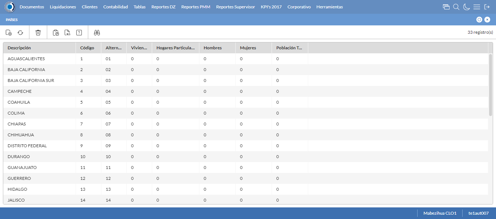
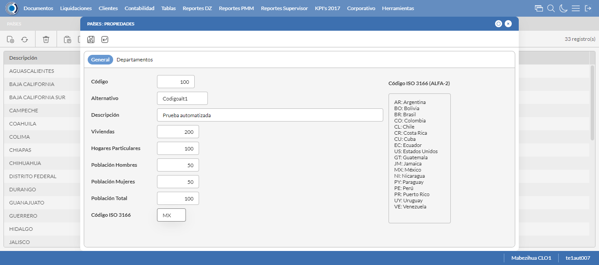
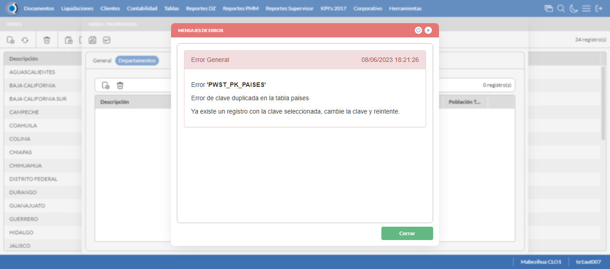
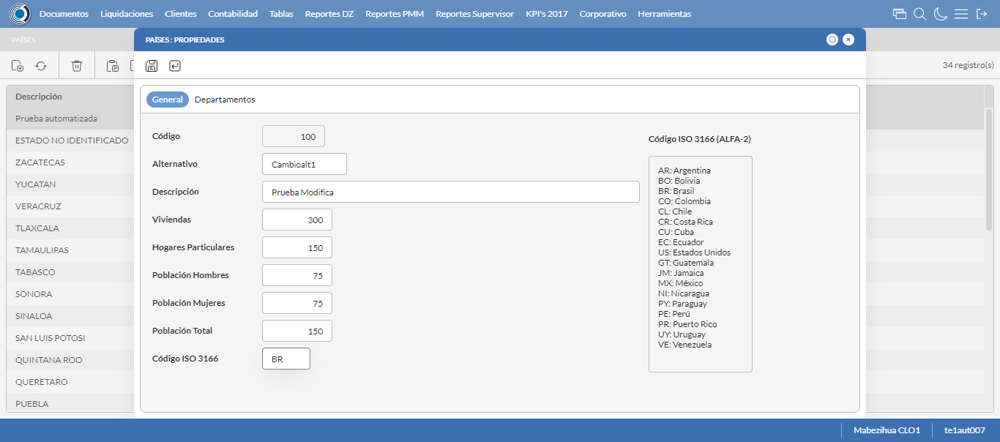
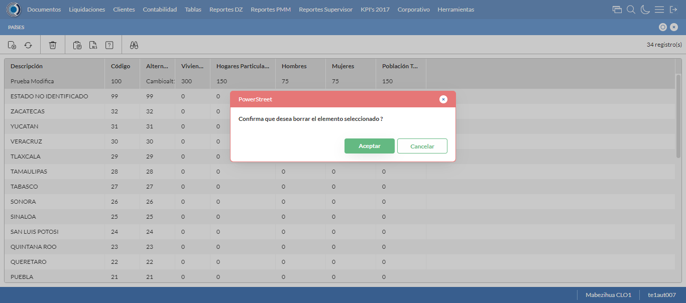

Desarrollado por : Area de Testing PWST
Fecha y hora de inicio : 2023-06-08 12:20:23
Duracion : 0:02:11.451192
Resultado : Total 8，Correctos 8 ，Taza de resultado 100.00%
Resumen 100.00% Errores 0 Fallidos 0 Correctos 8 Test realizados 8
| Caso de Prueba | Total | Correctos | Fallido | Error | Detalles | Captura del error |
| UbicacionesGeograficas.Test: Escenario 1 de Ubicaciones Geograficas | 8 | 8 | 0 | 0 | Detalles | |
test |
pt1_1: 2023-06-08 12:20:25,128 - root - INFO - Se abre el chrome
2023-06-08 12:20:27,813 - root - INFO - Entra a la URL
2023-06-08 12:20:27,930 - root - INFO - Maximiza la pantalla
|
|
||||
test_000: Ingresa a la base de datos |
pt1_2: 2023-06-08 12:20:31,012 - root - INFO - Escribe el usuario
2023-06-08 12:20:31,095 - root - INFO - Escribe la contraseña
2023-06-08 12:20:31,155 - root - INFO - Se dio clic en el boton ingresar
2023-06-08 12:20:32,905 - root - INFO - Ejecutar Enterprise
2023-06-08 12:20:36,949 - root - INFO - Cambia entre pestañas
|
|
||||
test_001: Abre menu y ejecuta pantalla |
pt1_3: 2023-06-08 12:20:50,342 - root - INFO - Abre la pantalla de Paises
2023-06-08 12:20:51,429 - root - INFO - La pantalla ejecutada es Paises.
2023-06-08 12:20:51,429 - root - INFO - Captura: C:\xampp\htdocs\versiones\automatizaciones\AutoPWST\01UG\report\img screen：20230608_12_20_51.png
2023-06-08 12:21:01,820 - root - INFO - Se presiona el boton 'Nuevo', para crear un nuevo registro.
|
 | ||||
test_002: Abre la ventana de nuevo y crear un registro |
pt1_4: 2023-06-08 12:21:02,355 - root - INFO - Se abrio la pantalla para el ingreso de un registro nuevo.
2023-06-08 12:21:02,377 - root - INFO - El campo 'Codigo' si se encuentra visible.
2023-06-08 12:21:02,396 - root - INFO - El campo 'Alternativo' si se encuentra visible.
2023-06-08 12:21:02,416 - root - INFO - El campo 'Descrición' si se encuentra visible.
2023-06-08 12:21:02,435 - root - INFO - El campo 'Viviendas' si se encuentra visible.
2023-06-08 12:21:02,454 - root - INFO - El campo 'Hogares Particulares' si se encuentra visible.
2023-06-08 12:21:02,475 - root - INFO - El campo 'Población Hombres' si se encuentra visible.
2023-06-08 12:21:02,493 - root - INFO - El campo 'Población Mujeres' si se encuentra visible.
2023-06-08 12:21:02,521 - root - INFO - El campo 'Población Total' si se encuentra visible.
2023-06-08 12:21:02,542 - root - INFO - El campo 'Código ISO 3166' si se encuentra visible.
2023-06-08 12:21:02,590 - root - INFO - Ingresa el codigo del nuevo registro
2023-06-08 12:21:02,677 - root - INFO - Ingresa el codigo alternativo del nuevo registro
2023-06-08 12:21:02,766 - root - INFO - Ingresa la descripción del nuevo registro
2023-06-08 12:21:02,817 - root - INFO - Ingresa el número de viviendas del nuevo registro
2023-06-08 12:21:02,871 - root - INFO - Ingresa el número de hogares particulares del nuevo registro
2023-06-08 12:21:02,917 - root - INFO - Ingresa el número de Población de hombres del nuevo registro
2023-06-08 12:21:02,967 - root - INFO - Ingresa el número de Población de mujeres del nuevo registro
2023-06-08 12:21:03,022 - root - INFO - Ingresa el número de Población Total del nuevo registro
2023-06-08 12:21:03,073 - root - INFO - Ingresa el Codigo ISO del nuevo registro
2023-06-08 12:21:04,074 - root - INFO - Captura: C:\xampp\htdocs\versiones\automatizaciones\AutoPWST\01UG\report\img screen：20230608_12_21_04.png
2023-06-08 12:21:05,320 - root - INFO - Se hace el cambio de pestaña para continuar con el registro nuevo
2023-06-08 12:21:05,910 - root - INFO - Se presiona el boton 'Nuevo', para crear un nuevo registro.
2023-06-08 12:21:06,476 - root - INFO - El campo 'Codigo' si se encuentra visible.
2023-06-08 12:21:06,498 - root - INFO - El campo 'Alternativo' si se encuentra visible.
2023-06-08 12:21:06,520 - root - INFO - El campo 'Descrición' si se encuentra visible.
2023-06-08 12:21:06,540 - root - INFO - El campo 'Impuesto' si se encuentra visible.
2023-06-08 12:21:06,562 - root - INFO - El campo 'Viviendas' si se encuentra visible.
2023-06-08 12:21:06,583 - root - INFO - El campo 'Hogares Particulares' si se encuentra visible.
2023-06-08 12:21:06,603 - root - INFO - El campo 'Población Hombres' si se encuentra visible.
2023-06-08 12:21:06,623 - root - INFO - El campo 'Población Mujeres' si se encuentra visible.
2023-06-08 12:21:06,640 - root - INFO - El campo 'Población Total' si se encuentra visible.
2023-06-08 12:21:06,676 - root - INFO - Ingresa el codigo del nuevo registro
2023-06-08 12:21:06,762 - root - INFO - Ingresa el codigo alternativo del nuevo registro
2023-06-08 12:21:06,841 - root - INFO - Ingresa la descripción del nuevo registro
2023-06-08 12:21:07,831 - root - INFO - Ingresa el número de viviendas del nuevo registro
2023-06-08 12:21:07,938 - root - INFO - Ingresa el número de hogares particulares del nuevo registro
2023-06-08 12:21:08,032 - root - INFO - Ingresa el número de Población de hombres del nuevo registro
2023-06-08 12:21:08,109 - root - INFO - Ingresa el número de Población de mujeres del nuevo registro
2023-06-08 12:21:08,181 - root - INFO - Ingresa el número de Población Total del nuevo registro
2023-06-08 12:21:08,249 - root - INFO - Se hace el cambio de pestaña para continuar con el registro nuevo
2023-06-08 12:21:08,817 - root - INFO - Se presiona el boton 'Nuevo', para crear un nuevo registro.
2023-06-08 12:21:09,384 - root - INFO - El campo 'Localidad' si se encuentra visible.
2023-06-08 12:21:09,405 - root - INFO - El campo 'Alternativo' si se encuentra visible.
2023-06-08 12:21:09,427 - root - INFO - El campo 'Descrición' si se encuentra visible.
2023-06-08 12:21:09,448 - root - INFO - El campo 'Viviendas' si se encuentra visible.
2023-06-08 12:21:09,466 - root - INFO - El campo 'Hogares Particulares' si se encuentra visible.
2023-06-08 12:21:09,486 - root - INFO - El campo 'Población Hombres' si se encuentra visible.
2023-06-08 12:21:09,504 - root - INFO - El campo 'Población Mujeres' si se encuentra visible.
2023-06-08 12:21:09,524 - root - INFO - El campo 'Población Total' si se encuentra visible.
2023-06-08 12:21:09,560 - root - INFO - Ingresa el codigo del nuevo registro
2023-06-08 12:21:09,636 - root - INFO - Ingresa el codigo alternativo del nuevo registro
2023-06-08 12:21:09,718 - root - INFO - Ingresa la descripción del nuevo registro
2023-06-08 12:21:09,811 - root - INFO - Ingresa el número de viviendas del nuevo registro
2023-06-08 12:21:09,931 - root - INFO - Ingresa el número de hogares particulares del nuevo registro
2023-06-08 12:21:09,991 - root - INFO - Ingresa el número de Población de hombres del nuevo registro
2023-06-08 12:21:10,058 - root - INFO - Ingresa el número de Población de mujeres del nuevo registro
2023-06-08 12:21:10,124 - root - INFO - Ingresa el número de Población Total del nuevo registro
2023-06-08 12:21:10,175 - root - INFO - Se hace el cambio de pestaña para continuar con el registro nuevo
2023-06-08 12:21:10,780 - root - INFO - Se presiona el boton 'Nuevo', para crear un nuevo registro.
2023-06-08 12:21:11,336 - root - INFO - El campo 'Código' si se encuentra visible.
2023-06-08 12:21:11,355 - root - INFO - El campo 'Alternativo' si se encuentra visible.
2023-06-08 12:21:11,377 - root - INFO - El campo 'Descrición' si se encuentra visible.
2023-06-08 12:21:11,395 - root - INFO - El campo 'Viviendas' si se encuentra visible.
2023-06-08 12:21:11,414 - root - INFO - El campo 'Hogares Particulares' si se encuentra visible.
2023-06-08 12:21:11,435 - root - INFO - El campo 'Población Hombres' si se encuentra visible.
2023-06-08 12:21:11,455 - root - INFO - El campo 'Población Mujeres' si se encuentra visible.
2023-06-08 12:21:11,475 - root - INFO - El campo 'Población Total' si se encuentra visible.
2023-06-08 12:21:11,513 - root - INFO - Ingresa el codigo del nuevo registro
2023-06-08 12:21:11,602 - root - INFO - Ingresa el codigo alternativo del nuevo registro
2023-06-08 12:21:11,701 - root - INFO - Ingresa la descripción del nuevo registro
2023-06-08 12:21:11,778 - root - INFO - Ingresa el número de viviendas del nuevo registro
2023-06-08 12:21:11,854 - root - INFO - Ingresa el número de hogares particulares del nuevo registro
2023-06-08 12:21:11,940 - root - INFO - Ingresa el número de Población de hombres del nuevo registro
2023-06-08 12:21:12,013 - root - INFO - Ingresa el número de Población de mujeres del nuevo registro
2023-06-08 12:21:12,086 - root - INFO - Ingresa el número de Población Total del nuevo registro
2023-06-08 12:21:12,158 - root - INFO - Se da clic en el boton Guardar; se debe crear un nuevo registro.
2023-06-08 12:21:12,463 - root - INFO - Se da clic en el boton Guardar; se debe crear un nuevo registro.
2023-06-08 12:21:12,856 - root - INFO - Se hace el cambio de pestaña para continuar con el registro nuevo
2023-06-08 12:21:13,450 - root - INFO - Se presiona el boton 'Nuevo', para crear un nuevo registro.
2023-06-08 12:21:13,991 - root - INFO - El campo 'Artículo' si se encuentra visible.
2023-06-08 12:21:14,007 - root - INFO - El campo 'Impuesto' si se encuentra visible.
2023-06-08 12:21:17,065 - root - INFO - Se da clic en el boton Guardar; se debe crear un nuevo registro.
2023-06-08 12:21:18,136 - root - INFO - Se da clic en el boton Guardar; se debe crear un nuevo registro.
2023-06-08 12:21:19,202 - root - INFO - Se da clic en el boton Guardar; se debe crear un nuevo registro.
|
 | ||||
test_003: Repetir el registro creado anteriormente |
pt1_5: 2023-06-08 12:21:20,262 - root - INFO - Se presiona el boton 'Refrescar', para crear un nuevo registro igual al anterior.
2023-06-08 12:21:22,353 - root - INFO - Se presiona el boton 'Nuevo', para crear un nuevo registro igual al anterior.
2023-06-08 12:21:22,926 - root - INFO - Ingresa el codigo del nuevo registro
2023-06-08 12:21:23,009 - root - INFO - Ingresa el codigo alternativo del nuevo registro
2023-06-08 12:21:23,105 - root - INFO - Ingresa la descripción del nuevo registro
2023-06-08 12:21:23,155 - root - INFO - Ingresa el número de viviendas del nuevo registro
2023-06-08 12:21:23,207 - root - INFO - Ingresa el número de hogares particulares del nuevo registro
2023-06-08 12:21:23,259 - root - INFO - Ingresa el número de Población de hombres del nuevo registro
2023-06-08 12:21:23,311 - root - INFO - Ingresa el número de Población de mujeres del nuevo registro
2023-06-08 12:21:23,363 - root - INFO - Ingresa el número de Población Total del nuevo registro
2023-06-08 12:21:23,418 - root - INFO - Ingresa el Codigo ISO del nuevo registro
2023-06-08 12:21:24,428 - root - INFO - Captura: C:\xampp\htdocs\versiones\automatizaciones\AutoPWST\01UG\report\img screen：20230608_12_21_24.png
2023-06-08 12:21:25,651 - root - INFO - Se hace el cambio de pestaña para continuar con el registro nuevo
2023-06-08 12:21:25,876 - root - INFO - Se da clic en el boton Guardar; se debe crear un nuevo registro.
2023-06-08 12:21:26,877 - root - INFO - Captura: C:\xampp\htdocs\versiones\automatizaciones\AutoPWST\01UG\report\img screen：20230608_12_21_26.png
2023-06-08 12:21:32,307 - root - INFO - Se presiona el boton 'Cerrar', para cerrar el mensaje de duplicidad de llave primaria
2023-06-08 12:21:33,308 - root - INFO - Captura: C:\xampp\htdocs\versiones\automatizaciones\AutoPWST\01UG\report\img screen：20230608_12_21_33.png
2023-06-08 12:21:33,531 - root - INFO - Se presiona el boton 'Cerrar', para cerrar el mensaje de duplicidad de llave primaria
2023-06-08 12:21:33,926 - root - INFO - Se presiona el boton 'Cerrar', para cerrar la ventana
|
 | ||||
test_004: Modificar el registro |
pt1_6: 2023-06-08 12:21:34,236 - root - INFO - Se presiona el boton 'Refrescar', para crear un nuevo registro igual al anterior.
2023-06-08 12:21:37,381 - root - INFO - Se presiona el boton 'Codigo', para buscar un nuevo registro y poder modificarlo.
2023-06-08 12:21:39,511 - root - INFO - Se da clic en el registro creado, para proceder a modificarlo.
2023-06-08 12:21:40,154 - root - INFO - Ingresa el codigo alternativo del nuevo registro
2023-06-08 12:21:40,264 - root - INFO - Ingresa la descripción del nuevo registro
2023-06-08 12:21:40,361 - root - INFO - Ingresa el número de viviendas del nuevo registro
2023-06-08 12:21:40,502 - root - INFO - Ingresa el número de hogares particulares del nuevo registro
2023-06-08 12:21:40,585 - root - INFO - Ingresa el número de Población de hombres del nuevo registro
2023-06-08 12:21:40,659 - root - INFO - Ingresa el número de Población de mujeres del nuevo registro
2023-06-08 12:21:40,743 - root - INFO - Ingresa el número de Población Total del nuevo registro
2023-06-08 12:21:40,830 - root - INFO - Ingresa el Codigo ISO del nuevo registro
2023-06-08 12:21:41,831 - root - INFO - Captura: C:\xampp\htdocs\versiones\automatizaciones\AutoPWST\01UG\report\img screen：20230608_12_21_41.png
2023-06-08 12:21:43,028 - root - INFO - Se hace el cambio de pestaña para continuar con el registro nuevo
2023-06-08 12:21:44,120 - root - INFO - Se da clic en el registro creado, para proceder a modificarlo.
2023-06-08 12:21:44,760 - root - INFO - Ingresa el codigo alternativo del nuevo registro
2023-06-08 12:21:44,879 - root - INFO - Ingresa la descripción del nuevo registro
2023-06-08 12:21:45,933 - root - INFO - Ingresa el número de viviendas del nuevo registro
2023-06-08 12:21:46,072 - root - INFO - Ingresa el número de hogares particulares del nuevo registro
2023-06-08 12:21:46,211 - root - INFO - Ingresa el número de Población de hombres del nuevo registro
2023-06-08 12:21:46,322 - root - INFO - Ingresa el número de Población de mujeres del nuevo registro
2023-06-08 12:21:46,424 - root - INFO - Ingresa el número de Población Total del nuevo registro
2023-06-08 12:21:46,473 - root - INFO - Se hace el cambio de pestaña para continuar con el registro nuevo
2023-06-08 12:21:47,613 - root - INFO - Se da clic en el registro creado, para proceder a modificarlo.
2023-06-08 12:21:48,264 - root - INFO - Ingresa el codigo alternativo del nuevo registro
2023-06-08 12:21:48,379 - root - INFO - Ingresa la descripción del nuevo registro
2023-06-08 12:21:48,474 - root - INFO - Ingresa el número de viviendas del nuevo registro
2023-06-08 12:21:48,573 - root - INFO - Ingresa el número de hogares particulares del nuevo registro
2023-06-08 12:21:48,688 - root - INFO - Ingresa el número de Población de hombres del nuevo registro
2023-06-08 12:21:48,786 - root - INFO - Ingresa el número de Población de mujeres del nuevo registro
2023-06-08 12:21:48,889 - root - INFO - Ingresa el número de Población Total del nuevo registro
2023-06-08 12:21:48,961 - root - INFO - Se hace el cambio de pestaña para continuar con el registro nuevo
2023-06-08 12:21:50,079 - root - INFO - Se da clic en el registro creado, para proceder a modificarlo.
2023-06-08 12:21:51,808 - root - INFO - Ingresa el codigo alternativo del nuevo registro
2023-06-08 12:21:51,938 - root - INFO - Ingresa la descripción del nuevo registro
2023-06-08 12:21:52,042 - root - INFO - Ingresa el número de viviendas del nuevo registro
2023-06-08 12:21:52,141 - root - INFO - Ingresa el número de hogares particulares del nuevo registro
2023-06-08 12:21:52,251 - root - INFO - Ingresa el número de Población de hombres del nuevo registro
2023-06-08 12:21:52,349 - root - INFO - Ingresa el número de Población de mujeres del nuevo registro
2023-06-08 12:21:52,467 - root - INFO - Ingresa el número de Población Total del nuevo registro
2023-06-08 12:21:52,540 - root - INFO - Se da clic en el boton Guardar; se debe crear un nuevo registro.
2023-06-08 12:21:53,096 - root - INFO - Se da clic en el boton Guardar; se debe crear un nuevo registro.
2023-06-08 12:21:53,537 - root - INFO - Se hace el cambio de pestaña para continuar con el registro nuevo
2023-06-08 12:21:54,682 - root - INFO - Se da clic en el registro creado, para proceder a modificarlo.
2023-06-08 12:21:58,299 - root - INFO - Se da clic en el boton Guardar; se debe crear un nuevo registro.
2023-06-08 12:21:59,372 - root - INFO - Se da clic en el boton Guardar; se debe crear un nuevo registro.
2023-06-08 12:22:00,429 - root - INFO - Se da clic en el boton Guardar; se debe modificar la informacion del registro.
|
 | ||||
test_005: Eliminar el registro creado |
pt1_7: 2023-06-08 12:22:01,507 - root - INFO - Se presiona el boton 'Refrescar', para proceder a eliminar el registro.
2023-06-08 12:22:05,125 - root - INFO - Se da clic en el registro creado, para proceder a eliminarlo.
2023-06-08 12:22:05,701 - root - INFO - Se hace el cambio de pestaña para continuar con el registro nuevo
2023-06-08 12:22:06,838 - root - INFO - Se da clic en el registro creado, para proceder a modificarlo.
2023-06-08 12:22:07,415 - root - INFO - Se hace el cambio de pestaña para continuar con el registro nuevo
2023-06-08 12:22:08,527 - root - INFO - Se da clic en el registro creado, para proceder a modificarlo.
2023-06-08 12:22:09,103 - root - INFO - Se hace el cambio de pestaña para continuar con el registro nuevo
2023-06-08 12:22:10,205 - root - INFO - Se da clic en el registro creado, para proceder a modificarlo.
2023-06-08 12:22:10,261 - root - INFO - Se presiona el boton 'Eliminar', para eliminar el registro.
2023-06-08 12:22:10,599 - root - INFO - Se da clic en el boton Guardar; se debe crear un nuevo registro.
2023-06-08 12:22:10,903 - root - INFO - Se da clic en el boton Guardar; se debe crear un nuevo registro.
2023-06-08 12:22:11,992 - root - INFO - Se da clic en el boton Guardar; se debe modificar la informacion del registro.
2023-06-08 12:22:13,599 - root - INFO - Se da clic en el registro creado, para proceder a eliminarlo.
2023-06-08 12:22:14,163 - root - INFO - Se hace el cambio de pestaña para continuar con el registro nuevo
2023-06-08 12:22:15,263 - root - INFO - Se da clic en el registro creado, para proceder a modificarlo.
2023-06-08 12:22:15,840 - root - INFO - Se hace el cambio de pestaña para continuar con el registro nuevo
2023-06-08 12:22:16,972 - root - INFO - Se da clic en el registro creado, para proceder a modificarlo.
2023-06-08 12:22:17,029 - root - INFO - Se presiona el boton 'Eliminar', para eliminar el registro.
2023-06-08 12:22:18,099 - root - INFO - Se hace el cambio de pestaña para continuar con el registro nuevo
2023-06-08 12:22:19,194 - root - INFO - Se da clic en el registro creado, para proceder a modificarlo.
2023-06-08 12:22:19,242 - root - INFO - Se presiona el boton 'Eliminar', para eliminar el registro.
2023-06-08 12:22:19,398 - root - INFO - Se da clic en el boton Guardar; se debe crear un nuevo registro.
2023-06-08 12:22:20,476 - root - INFO - Se da clic en el boton Guardar; se debe modificar la informacion del registro.
2023-06-08 12:22:22,097 - root - INFO - Se da clic en el registro creado, para proceder a eliminarlo.
2023-06-08 12:22:22,681 - root - INFO - Se hace el cambio de pestaña para continuar con el registro nuevo
2023-06-08 12:22:23,766 - root - INFO - Se da clic en el registro creado, para proceder a modificarlo.
2023-06-08 12:22:23,824 - root - INFO - Se presiona el boton 'Eliminar', para eliminar el registro.
2023-06-08 12:22:24,887 - root - INFO - Se da clic en el boton Guardar; se debe modificar la informacion del registro.
2023-06-08 12:22:25,951 - root - INFO - Se presiona el boton 'Eliminar', para eliminar el registro.
2023-06-08 12:22:27,952 - root - INFO - Captura: C:\xampp\htdocs\versiones\automatizaciones\AutoPWST\01UG\report\img screen：20230608_12_22_27.png
2023-06-08 12:22:28,103 - root - INFO - Se confirma el eliminado del registro
2023-06-08 12:22:28,403 - root - INFO - Se presiona el boton 'Refrescar', para crear un nuevo registro igual al anterior.
2023-06-08 12:22:30,453 - root - INFO - Se presiona el boton 'Cerrar', para cerrar la pantalla de Ubicaciones Geograficas.
|
 | ||||
test_006: Cerrar_Navegador |
pt1_8: 2023-06-08 12:22:34,740 - root - INFO - Se cierra chrome
|
|
||||
| Caso de prueba | 8 | 8 | 0 | 0 | Taza de resultado：100.00% | |